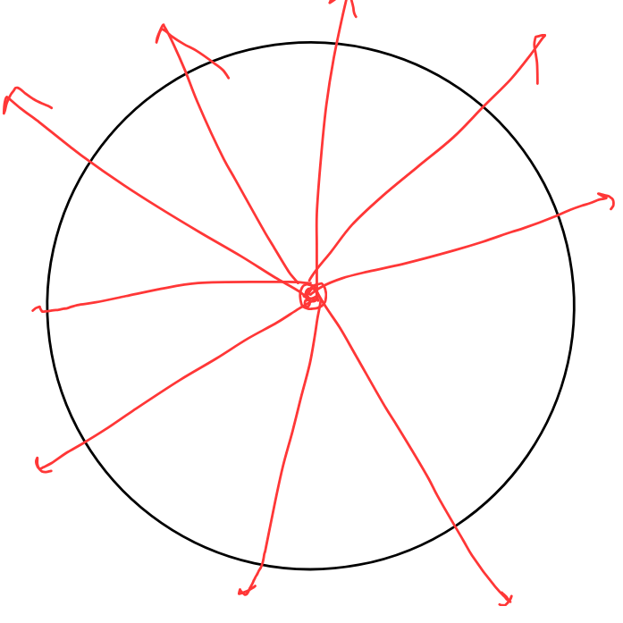

This is one of the most simplest and most beautiful law, i have ever laid my eyes upon
\[Gauss\ Law\ \]
Gauss law states that the next flux, for a closed body, is \(\frac{qenc}{e} \)
but the question is what is flux?
Usually we define flux as the amount of something which is passing over a surface, imagine like you are holding a sheet, and then there are 10 arrows on that sheet,
now like imagine something like a surface, thorugh which an electric or any field is going thorugh
As you can see the red lines which are electric field are passing over the surface S, now lets talk about something known as area vector!
Area vector!!!, but aniket, we have studied area to be an scaler, but how this is vector?
Imagine this, there is an area, a surface with area A, but its a scalr now, but since every vector is defined as \(\vec{A} = A * \hat{A} \)
since we have fifured out the Modulus of the area, but what about direction!??? idon't knwo wojewjfiofiosjfijsfjoifjosifjiosj
So as you can see here its is the direction of the area vector, which is perpendicular to the surface, and now whats cool is that, we can now define the flux!
Flux continued
So now the flus is defined as
\[\iint{\vec{E}} \cdot \vec{da} \]
This is flux of the electric field, which is the dot product of the electric field and the area vector!
Dot product
Since i am too lazy to explain the dot product i would just expain you thorugh giveing a Math Arizona university page
But, that doesn't means, that i am dozing off, in future sure i would create an animation :D
I hope you got a gist of it, but i really want you to know, that styduing flux is so cool!
Talking about Flux
Since we have defined flux to be \(\iint \vec{E} \cdot \vec{da}\) and then it means calculating the integral for the whole surface,
now why do we need this?? idk??
since iwe have a beautiful symmetry argument for the flux
an example of the sphere
Lets say we have a spehere where there is a charge inside it
So as you can see, if we see the electric field line originating from here, we could see tht,
hmm, so since the field is radially outwards, so for every part of it is perpendicular to the surface so the total flux is
\(4 \pi r^2 * E\)
Since, you liked it i want you to caclutae the flux thorugh a point charge inside a cube!
you would be suprised :D

Since you are now little complicated
Let us imagine a disc with a charge q palced just a distance x from it and the radius R so now, what we can say find the flux thorugh the speherical disk and then due to the charge
Usually this is a tough case, but i hope you can do it easily :D, just take somoe elements and integrate it :D
Gauss Law !
Hurray so we are finally at the gauss law, but hey, shouldn't you give more questions on the flux topic??
I yes so, so here are some freshly made questions you can practice on the flux topic :D
Problem 1
Imagine you have a hollow hemi-sphere of Radius \(R\), and a center of charge \(q\) at the center, now your task is to find the flux due to the charge throguht the hemisphere
Problem 2
Imagine you have a closed cylinder, whose both sides are closed, and its height is \(H\) and the raduius is \(R\), now a small charge q is placed at H/2 from its one end, now find the flux through the curved surface area of the cylinder
Extension of problem 2
Now the charge is placed x distance from cylinder's one end, now find the flux thorught the curved surface area of the cube
Gauss law finally!
so here we are at the gauss law which we have been waiting for, but before that remeber that gauss law is only applicable for Symmetric closed surfaces
So the gauss law states that , if there is a \(closed\ surface\ S \) then the total net flux thorrugh the surface due the the chrages inside would be
\(\frac{qec}{e} \) where \(qec \) is the total charge present "inside" the surface
The thing is
This is applicable for any weird closed surface brother!!!